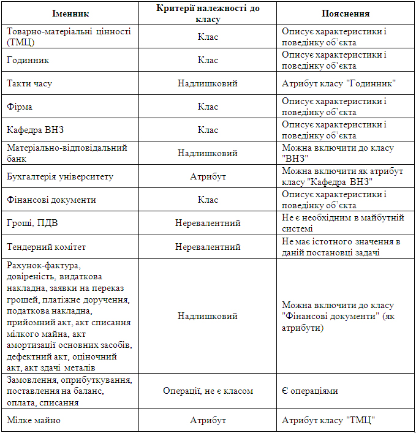
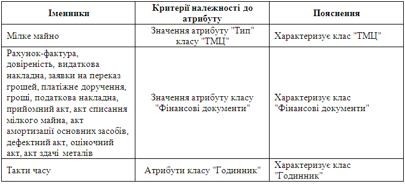
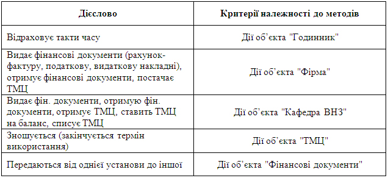
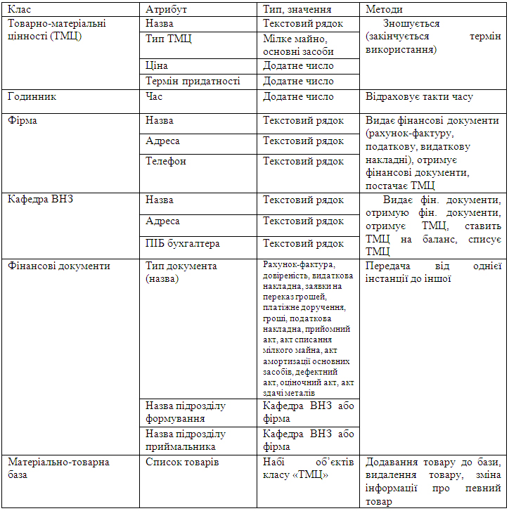

Технологія розробки даної версії
Об’єктно-орієнтоване проектування
Виписавши всі іменники та дієслова, проаналізувавши їх (як описано в теоретичних відомостях), отримали наступні результати семантичного аналізу даної задачі:| Таблиця обґрунтування класів |
|  |
| Таблиця обґрунтування атрибутів |
|  |
| Таблиця обґрунтування методів |
|  |
| Оскільки умова задачі може бути недостатно повною, слід провести додатковий аналіз бізнес-процесу. Наприклад ,в нашій задачі доцільно створити ще один клас - матеріально-товарна база університету (в ній знаходяться всі товарно-матеріальні цінності, що є на балансі університету). Також для більш точного відображення даного бізнес-процесу в програмі слід доповнити створені класи атрибутами та методами, проаналізувавши не лише окреслену задачу, а і реальний процес вцілому. |
| Структура класів |
|  |
[повернутися]